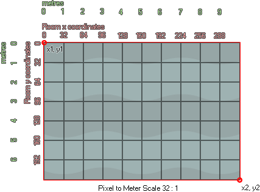

physics_world_create(pixeltometrescale);
| Argument | La description |
|---|---|
| pixeltometrescale | définit le rapport des pixels sur l'écran aux mètres dans le monde réel. Un rapport de 32: 1 sera spécifié comme 1/32 (ou 0,03125). |
Retours: N / A
Même si vous avez défini la physique pour vos objets, sans un monde pour les placer, ils seront par défaut sur le système de collision GameMaker Studio 2 traditionnel, vous avez donc besoin de cette fonction pour créer le système physique pour la pièce spécifiée dans un événement objet, ou le code de création de la pièce elle-même (il peut aussi être défini sans utiliser de code dans l'éditeur de pièce). Cette fonction associera un "monde" physique à la pièce et toutes les instances créées dans la pièce se comporteront en utilisant la physique qui a été définie pour eux et pour le monde lui-même.

Vous remarquerez que nous avons un argument qui définit un rapport entre la taille des pixels et les mètres. C'est parce que les fonctions physiques fonctionnent en utilisant des mesures du monde réel et donc nous devons traduire les coordonnées de pixels et les tailles de pixels dans ces mesures du monde réel en utilisant une "échelle pixel à mètre". Vous voudrez ajuster le paramètre pixeltometrescale jusqu'à ce que la taille moyenne des pixels des objets que vous utilisez se traduise grossièrement en objets physiques simulés de taille appropriée, et au-dessus vous pouvez voir que nous l'avons réglé à 32 pixels soit l'équivalent de 1 mètre. Il convient de noter que le système de physique fonctionnera avec des ratios de plus en plus petits, mais que la meilleure performance est lorsque les mesures du monde réel de vos objets ne sont pas moins de 0,1 mètres et pas plus de 50 mètres.
physics_world_create(1/32)
Le code ci-dessus va créer un monde physique dans la pièce actuelle avec un rapport d'échelle de 32 pixels soit l'équivalent de 1 mètre.